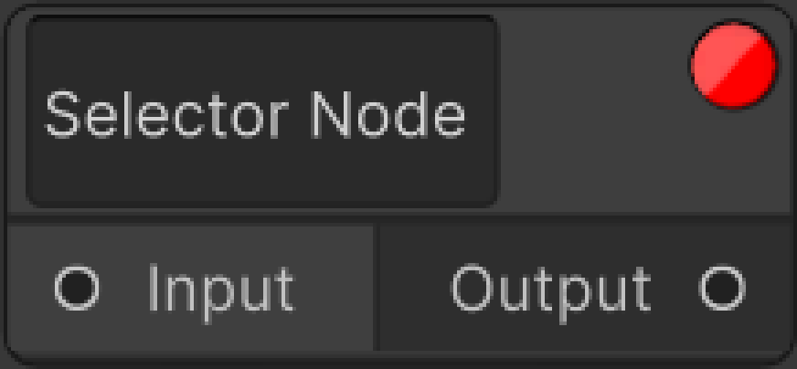

Selector Node
Selector node is the node we use to get a certain part of the data coming to it on the graph.
📝Input Field
It is the input field element where selection data is given, i.e key names, element indexes.
There are two different modes in it.
{ } Connected To A Object Node
When connected to the Object node, the input field part inside it expects any key in the JObject as a parser.
When we give this key, it forwards the data by taking only the JToken that has that key.
[ ] Connected To A Array Node
When connected to the Array node, the input field part inside it expects any index in the JArray as a parser.
When we give this index, it forwards the data by taking only the JToken in its index.